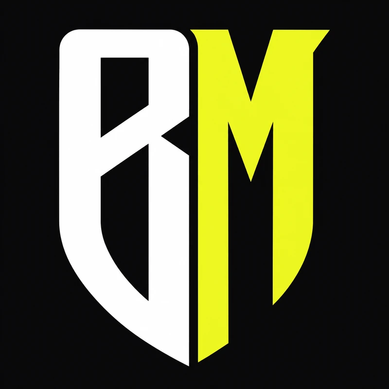

MU AX — Trailer Cinematic
Trailer cinematic criado para apresentar o universo do servidor MU AX.
Crio vídeos cinematic, shorts e intros para divulgar seu servidor de MU Online. Edição de vídeo e videografismo para marcas, produtos e universos que merecem ser vistos.
Olhar criativo. Técnica. Atenção a cada frame.
Ritmo, composição e acabamento. Cada corte tem um motivo e cada transição serve à mensagem do seu projeto.
Qualidade em cada frame. Edição com intenção. Vídeos com personalidade.
Conheça os projetos que fazem parte da minha história. Da ideia ao último frame, cada vídeo tem algo para contar. Toque para assistir sem sair da página.
Trailer cinematic criado para apresentar o universo do servidor MU AX.
Trailer de divulgação com PvP, spots disputados, hunts e invasões, além da apresentação dos sistemas do servidor: conquistas, daily reward e roleta da sorte.
Trailer de lançamento que destaca a nova engine gráfica e a experiência em 120 FPS, com chamada final para o servidor.
Um dos meus primeiros vídeos para MU Online. Faz parte do começo da minha trajetória nesse universo.
Do seu universo no MU Online ao próximo lançamento da sua marca. Escolha o formato e vamos dar vida à sua ideia.
Um minuto para apresentar seu universo com a intensidade que ele merece.
Shorts + vídeo cinematic + intro cinematic: três peças para apresentar e divulgar seu projeto.
Mais de R$ 19 de economia vs. avulsos + intro inclusa
Seu MU Online ou produto em um vídeo curto, criado para as redes sociais.
Prazos, materiais e detalhes do projeto são combinados pelo WhatsApp antes de começar.
Um processo simples e transparente: tudo é alinhado antes da edição começar, para que o vídeo final comunique exatamente o que você precisa.
Você escolhe o pacote e me conta, pelo WhatsApp, o objetivo do vídeo e onde ele será publicado.
Logo, cores, cenas de gameplay, imagens e referências. Avaliamos juntos o que está pronto e o que falta.
Com escopo e prazo definidos, entram o ritmo, a composição, o motion design e o acabamento.
Seu vídeo no formato certo para cada canal, pronto para apresentar e divulgar o seu projeto.
Cinematic para apresentar, shorts para as redes e uma intro cinematic com a sua identidade. Formatos, valores e materiais necessários.
Para marcas, produtos e jogosComo a edição e o motion design organizam imagens e informações, e como preparar o seu briefing.

Comecei a editar vídeos aos 12 anos. O que nasceu da curiosidade de transformar imagens em histórias se tornou a minha forma de criar e de me expressar.
Sou formado em Videografismo (Motion Design) e em Análise e Desenvolvimento de Sistemas. Na BMMotion, uno sensibilidade visual e raciocínio técnico para dar ritmo, personalidade e intenção a cada projeto.
Seja para mostrar a força do seu servidor de MU Online ou valorizar um produto, o meu foco é o mesmo: fazer cada frame contar.
Qualidade é cuidar do que você vê. E do que você sente.
Cara sensacional, um belo vídeo elaborado, que vou poder utilizar de várias formas, inclusive para divulgações, que é o principal foco. Trabalho sensacional, obrigado pelo vídeo.
Um espaço para destacar as marcas e os projetos que caminham junto com a BMMotion.
Não encontrou o que procura? Me chama no WhatsApp e respondo pessoalmente.
O cinematic de 1 minuto custa R$ 79,90. O Shorts Cinematic vertical custa R$ 49,90. O Combo Impacto custa R$ 110 e inclui 1 cinematic de 1 minuto, 1 short vertical e 1 intro cinematic.
O combo de R$ 110 inclui 1 short vertical, 1 vídeo cinematic e 1 intro cinematic. Duração do short e da intro, estilo e materiais são combinados com você.
O formato vertical é pensado para Instagram, Facebook, YouTube Shorts, TikTok e Kwai. Antes da edição, conversamos sobre os canais em que você pretende publicar e a mensagem principal de cada peça.
Sim. Cinematic e Shorts Cinematic também podem apresentar produtos e marcas. Envie a identidade visual, os materiais disponíveis e uma referência do que deseja comunicar para conversarmos sobre seu projeto.
Os pacotes apresentados são de criação e edição dos vídeos. Veiculação de anúncios, compra de mídia e distribuição em canais de terceiros não estão incluídas na descrição desses pacotes.
Escolha um pacote e converse pelo WhatsApp (11) 99422-3692. Envie o objetivo, os materiais disponíveis e onde o vídeo será usado. Prazo, escopo e detalhes da entrega são definidos antes de começar.
Me conte o que você tem em mente. O próximo vídeo pode ser o seu.